FILE COPY
Walter
Tengler
Born 1971. A home-built Apple II, BASIC all night, an assembler book at the lake, and an Apple IIgs bought with saved-up money.
The gift
In the 1980s an Apple employee gave me an Apple II that he had built himself from parts. I learned BASIC on it and programmed all night.
The IIgs
When the Apple IIgs came out, I bought one with my own savings. That must have been around 1986.
Pascal, and assembler at the lake
Pascal followed BASIC. I learned assembler from a book that I had with me when I was a lifeguard with the Wasserwacht, the German water rescue service: on weekends I lay by the lake and saved people.
Real life, and the way back
Then came the serious side of life, and there was no time left for computers. Now I am 55, and I have rediscovered my love for the Apple IIgs.
Today I write apps for the Mac and iOS, and programs, games and demos for the Apple IIgs in 65816 assembly.
All my software
Everything I have made so far, sorted the way it stands on the start page. Mac and iOS apps, Apple IIgs programs, and a few for Portugal and Europe.
Mac Utilities & Creative
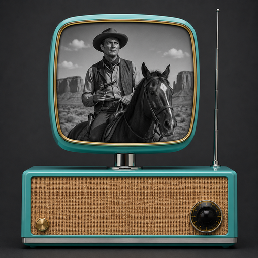
Retro TVA century of television, on your Mac — play any video through six TVs from 1928 to 2024 Retro TubeWatch any video through 1980s computer graphics — Apple II, C64, Game Boy, NES, MSX and more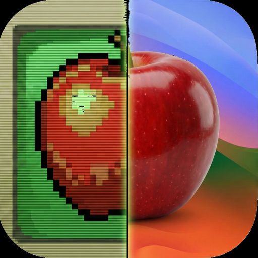
Retro Graphics ConverterConvert & view vintage computer graphics from Apple II, C64, Amiga, Atari, and more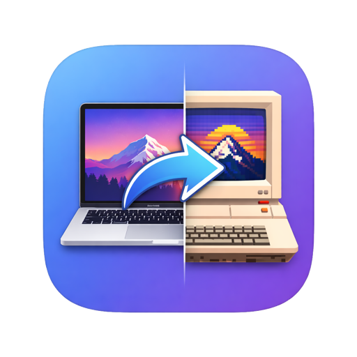
BitPastTransform modern images into authentic retro graphics for 18 classic computer systems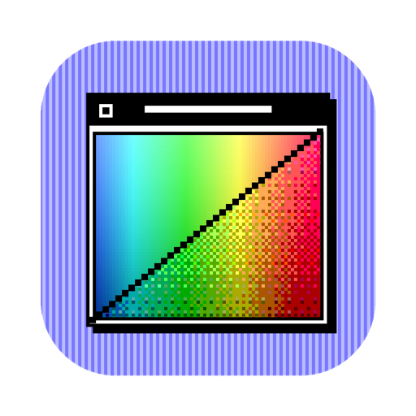
GS RemapConvert pictures to and from Apple IIgs Super Hi-Res, with the look of the IIgs desktop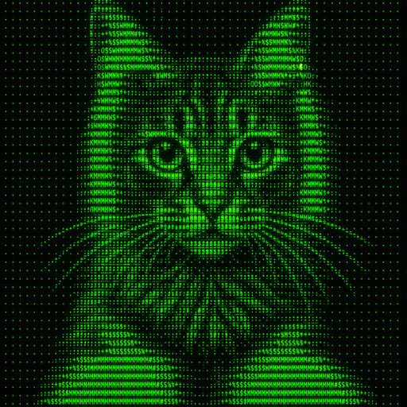
1977Convert any image into Apple II ASCII art with live phosphor-screen preview — open source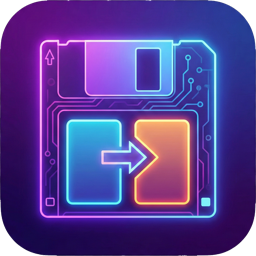
RetroBrowseA modern dual-pane file manager for Apple II disk images — ProDOS, DOS 3.3, ShrinkIt and more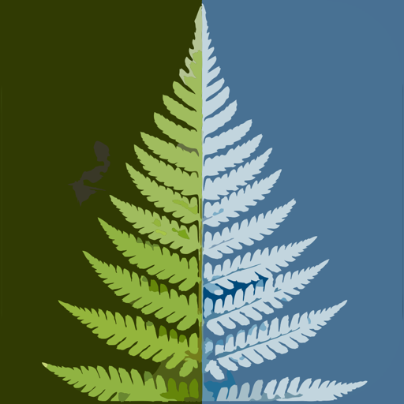
CyanHeroDigital negatives for cyanotype and alternative process UV art printing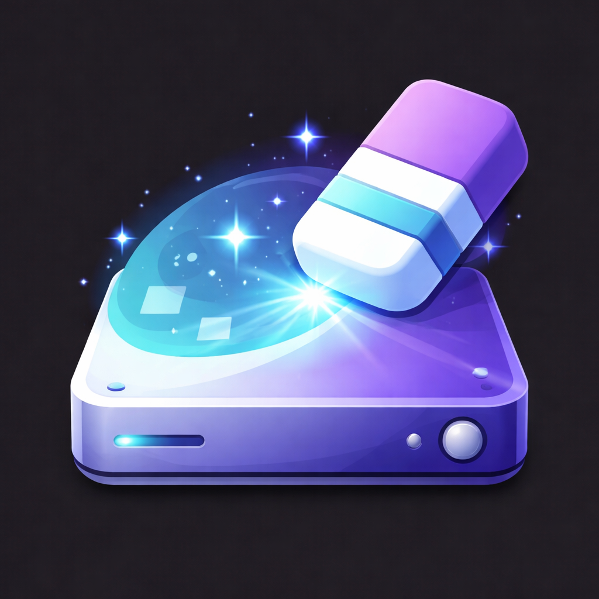
AichiveReclaim the disk space your AI tools forgot to clean up FCPX CleanReclaim the space Final Cut Pro forgot — safely and selectively EasyDupFind and remove duplicate files from your Mac with ease ExifEasyView and edit photo metadata and EXIF data directly on macOS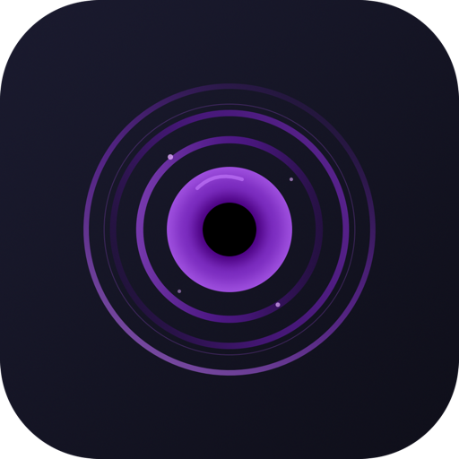
File VortexSmart file organizer that automatically sorts your Mac's chaos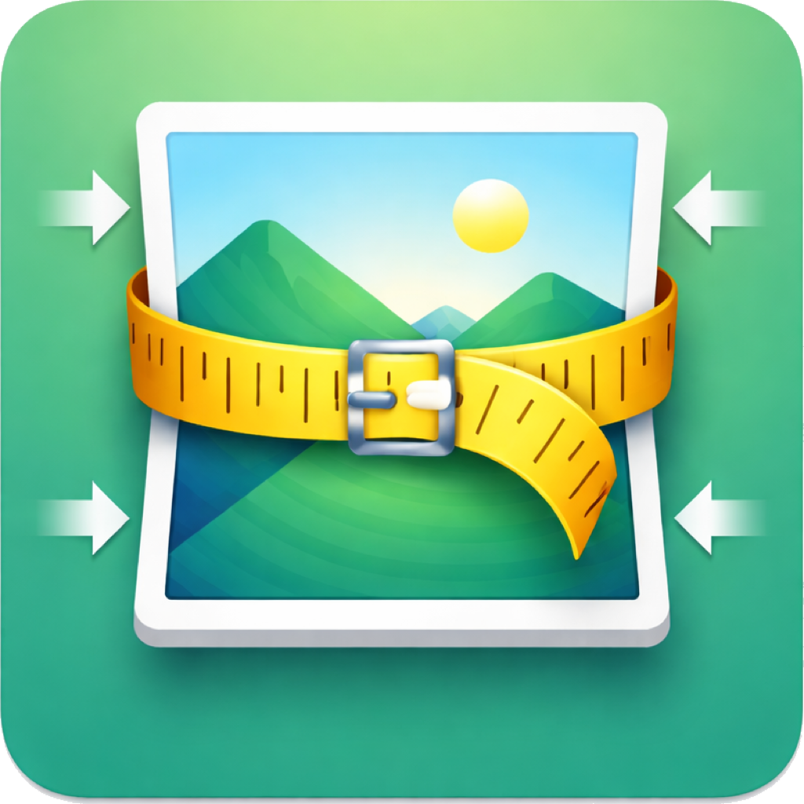
SlimPixSmart image compression for Mac — smaller files, same quality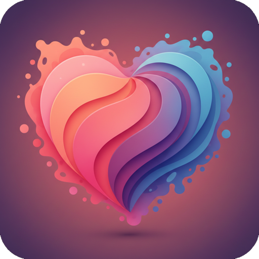
Cores do AmorExtract beautiful color palettes from any image on macOS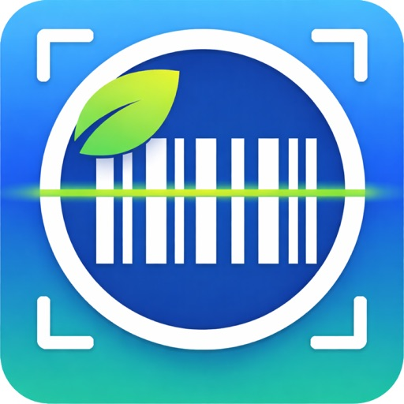
ScanoraSmart food scanner — scan barcodes and know what you eat AdSense MonitorTrack your ad revenue from mobile apps in real time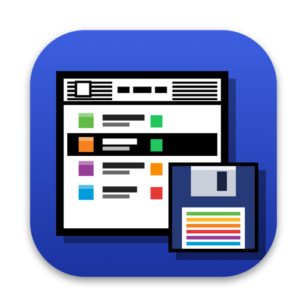
Wally’s ManagerEvery app you ship in one retro desktop — versions, review status and Apple IIgs disks, in thirteen classic skinsApple IIgs
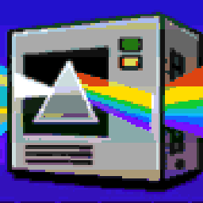
MegaconvertGSAn image converter that runs on the Apple IIgs itself — over 60 retro and modern formats to Super Hi-Res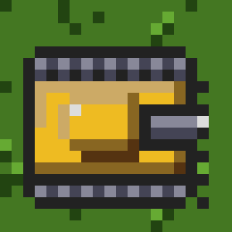
Conquer GSReal-time strategy for the Apple IIgs — build a base, harvest ore, conquer the enemy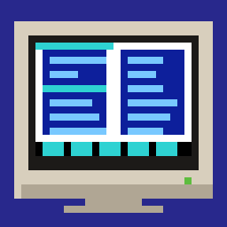
GS CommanderA Norton Commander style file manager for the Apple IIgs — two panes, archives and disk images, previews of pictures, sounds and documents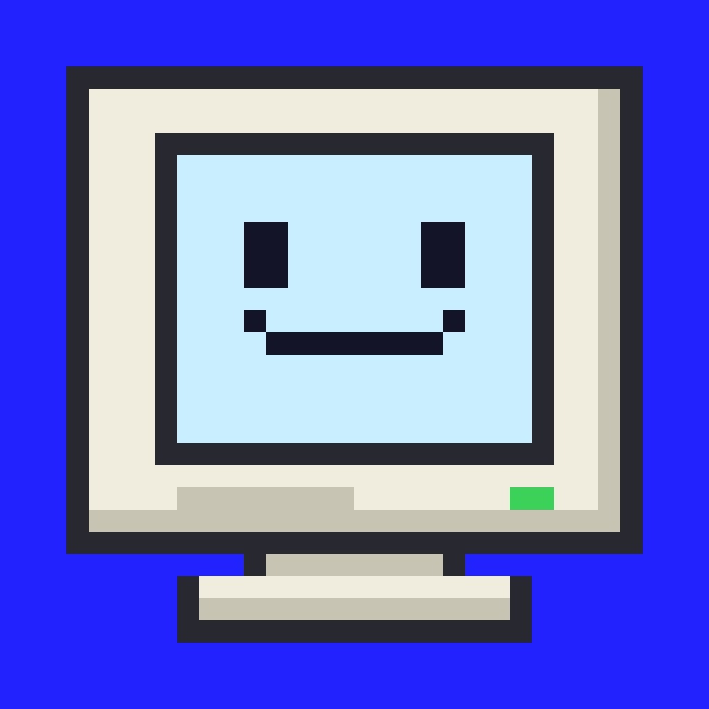
EmuBuddyAn Apple IIgs emulator for the Mac — PDF printing, drag and drop into the Finder, disk browser and a full command line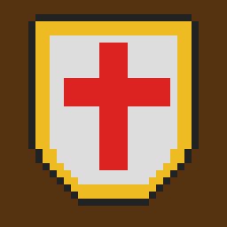
Conquer 3: SandstormReal-time strategy for the Apple IIgs — three armies, each with its own units and buildings, fight over the desert. In development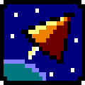
HyperhaulSpace trading and combat for the Apple IIgs — eight galaxies, filled 3D ships in real time, pirates, police and two missions. In development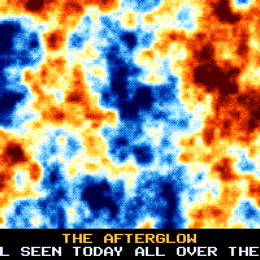
IIgs DemosDemos for the Apple IIgs — animations and demo-scene effects in Super Hi-Res, with disk images to downloadPortugal
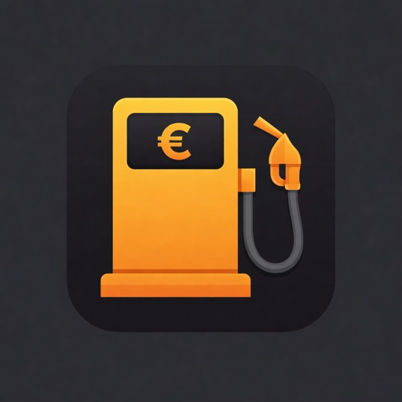
BombaReal-time fuel prices at every petrol station in Portugal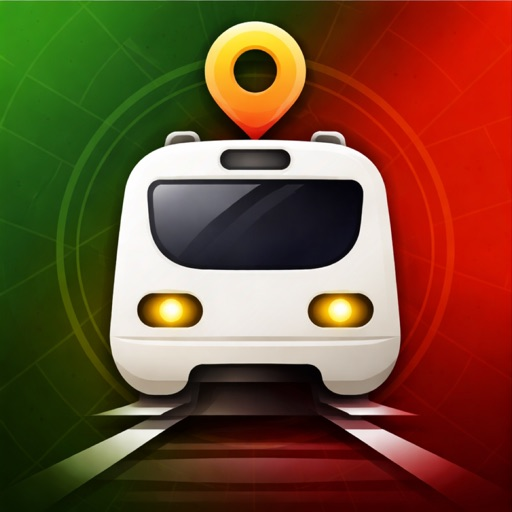
Comboio TreckLive train tracking for Portugal's entire rail network Clima VivaReal-time climate data across Portugal, beautifully visualized FluvioReal-time flood monitoring and river level tracking in Portugal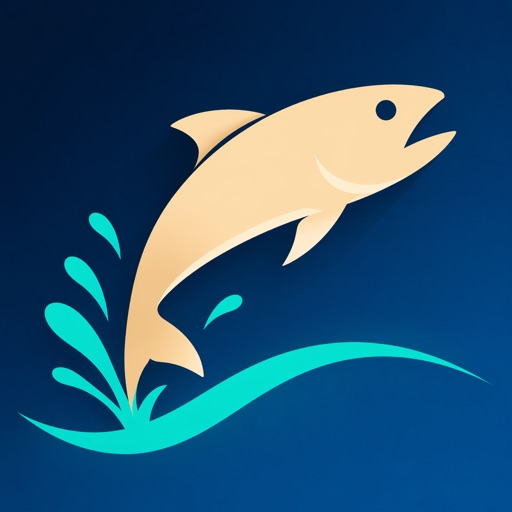
Fugiu!The essential fishing guide for Portuguese fishermen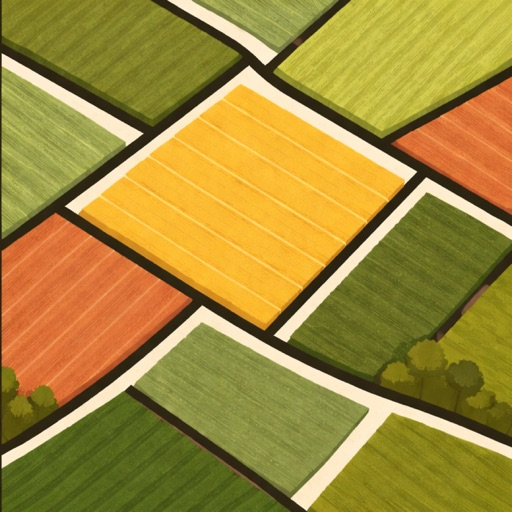
PIBUPBuilding boundaries and property limits on an interactive map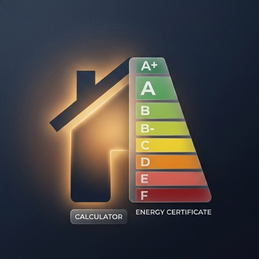
Certificado EnergéticoCalculate your home's energy efficiency class in Portugal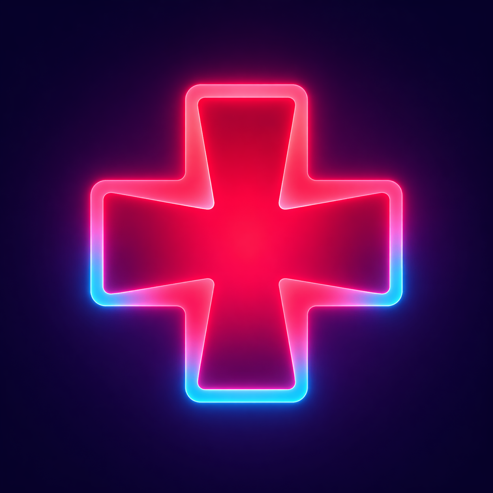
SOS IbéricaEmergency services and public contacts for Portugal and SpainEurope & Global
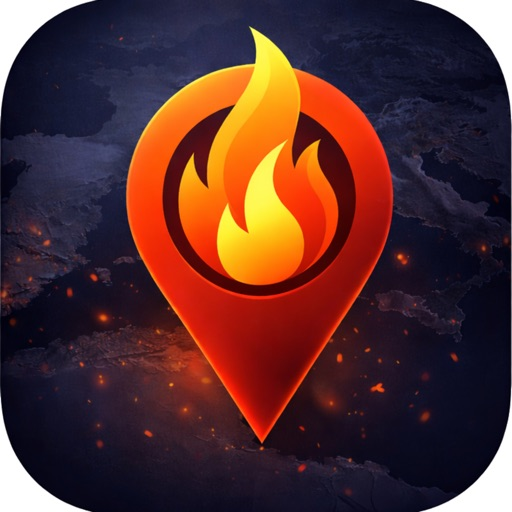
Fire — EU FiresReal-time wildfire tracking across Europe, powered by NASA FIRMS satellite data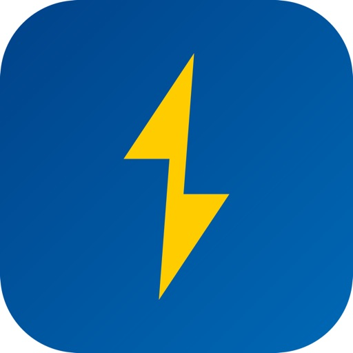
EU Energy MonitorReal-time European energy market data and power generation at a glance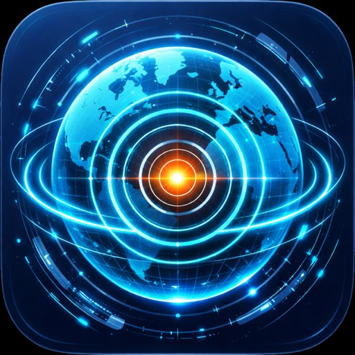
TerramotoEarthquake & tsunami physics simulation and live seismic tracking AbasteceReal-time fuel prices at every station in Chile, Brazil and Argentina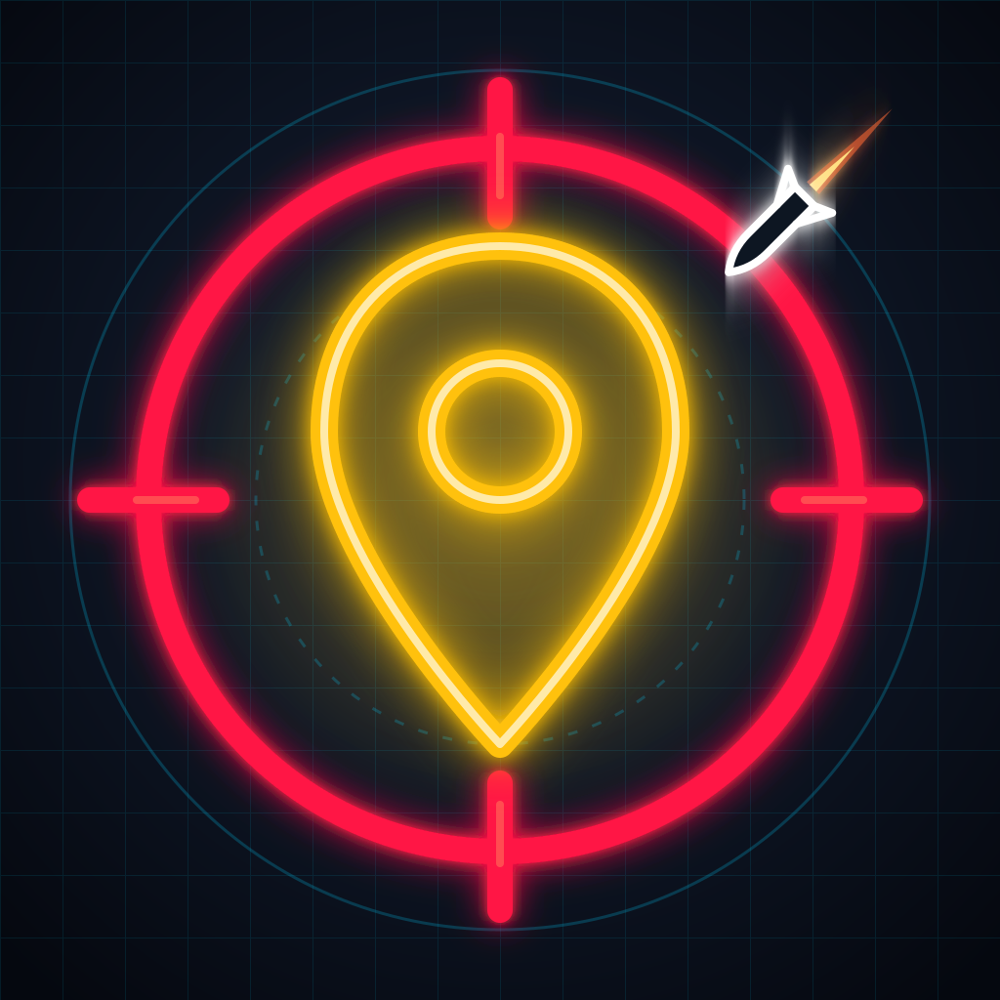
Missile TagLaunch virtual missiles at your friends' real locations — run or shield up before it landsUtilities & Planning
Games
Also: IIgs Demos · Retro computing: 1977 · GitHub · The start page